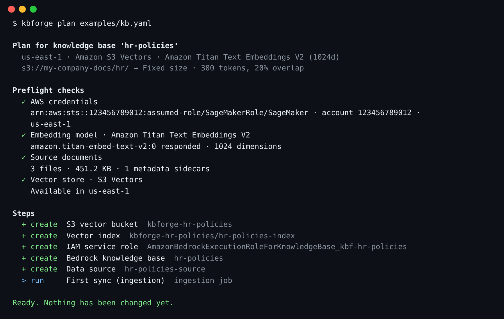
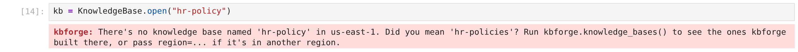

Reference
The guide gets you from zero to a working knowledge base. This page is for when you want to change a setting, automate it, or something went wrong.
Options
Everything KnowledgeBase(...) accepts. The same keys work in YAML and JSON config files.
| Option | Default | What it does |
|---|---|---|
name | required | Knowledge base name. Letters, digits, - and _. All other resource names are derived from it. |
source | required | "s3://bucket/prefix/", "https://site", S3Source(...) or WebSource([...], max_pages=500). |
embedding | titan-v2 | titan-v2, cohere-en, cohere-multi, titan-v1. Fixed once the KB exists. |
dimensions | model default | Vector size. Titan v2 supports 256, 512 or 1024. |
vector_store | s3_vectors | s3_vectors or opensearch_serverless. |
chunking | fixed | fixed, hierarchical, semantic, none, or Chunking.fixed(500, 10) for custom sizes. Fixed once the data source exists. |
parsing | default | How text is read out of each file. default extracts plain text. A parsing model ("nova-lite", "claude-sonnet-4", any model id from kbforge.parsing_models(), or Parsing.foundation_model("nova-pro", prompt="...")) reads tables, charts and scans in PDFs. data_automation uses Bedrock Data Automation. Not changed on an existing data source. |
role_arn | create one | Reuse an existing Bedrock role instead of creating one. It's never deleted by kbforge. |
permissions_boundary | none | Attached to the role kbforge creates, if your organisation requires one. |
region | session default | AWS region for everything. Must match your bucket's region. |
description | generated | Shown in the Bedrock console. |
tags | {} | Added to every resource, alongside managed-by: kbforge and kbforge-kb: <name>. |
sync | True | Run the first ingestion as part of apply(). |
Choosing settings
| Decision | Start with | Switch when |
|---|---|---|
| Vector store | S3 Vectors: serverless, no minimum cost, nothing to manage. | You need hybrid (keyword + vector) search or very low-latency, high-QPS queries. OpenSearch Serverless bills for at least a couple of OCUs while it exists. |
| Embedding model | Titan v2, 1024d: cheap, multilingual, long input. | English-only corpus where retrieval quality matters most: try cohere-en. Many languages mixed together: cohere-multi. |
| Parsing | Default parser: plain text, free and fast. | PDFs whose meaning sits in tables, charts or scanned pages: a parsing model. Start with nova-lite (cheap); nova-pro or claude-sonnet-4 for dense layouts. Each page is a model call on every sync, so syncs are slower and cost more. Run kbforge.parsing_models() (or kbforge parsers) to see what your account offers. If the model can't read a file, Bedrock falls back to the default parser for it. |
| Chunking | Fixed, 300 tokens, 20% overlap. | Long structured documents (policies, manuals): hierarchical. Topic changes don't line up with paragraphs: semantic (slower and costs more per sync). Already-small files such as FAQs: none. |
hr-policies-v2), compare with ask(), then destroy() the one you don't keep.YAML, JSON & the CLI
Keep definitions in git and build them from a terminal or CI with the same plan → apply flow. examples/kb.yaml documents every option, including the settings for each chunking strategy. From a notebook, kb.save("kb.yaml") (or "kb.json") writes the file and KnowledgeBase.from_file("kb.yaml") reads it back; the extension picks the format.
# kb.yaml
name: hr-policies
region: us-east-1
source:
s3: s3://my-company-docs/hr/
embedding: titan-v2
vector_store: s3_vectors
chunking:
strategy: fixed
max_tokens: 300
overlap_percent: 20
parsing: # optional: have a model read tables, charts and scans
strategy: foundation_model # default | foundation_model | data_automation
model: nova-lite # see: kbforge parsers
prompt: Transcribe every table as Markdown. # optional
tags:
team: people-opsEach chunking strategy takes its own settings. Give only the ones for the strategy you pick; a setting from another strategy is reported as an error:
fixed:max_tokens,overlap_percenthierarchical:parent_tokens,child_tokens,overlap_tokenssemantic:max_tokens,buffer_size,breakpoint_thresholdnone: no settings
chunking:
strategy: hierarchical
parent_tokens: 1500
child_tokens: 300
overlap_tokens: 60Prefer JSON? Use the same keys in a .json file (see examples/kb.json); every command below accepts either.
{
"name": "hr-policies",
"source": {"s3": "s3://my-company-docs/hr/"},
"chunking": {"strategy": "semantic", "max_tokens": 300, "buffer_size": 0, "breakpoint_threshold": 95}
}kbforge init # write a starter kb.yaml (kbforge init kb.json for JSON)
kbforge plan kb.yaml # checks + what would be built
kbforge apply kb.yaml # asks before changing anything (-y to skip)
kbforge ask kb.yaml "question" # --answer for a written answer with citations
kbforge list # knowledge bases kbforge built in this region
kbforge sync kb.yaml
kbforge status kb.yaml
kbforge destroy kb.yaml
kbforge models # supported embedding models
kbforge parsers # models your account can use to parse documents

kbforge plan exits with code 2 when the plan is blocked, so CI can stop early.
What gets created
For a knowledge base named hr-policies using S3 Vectors:
| Resource | Name | Notes |
|---|---|---|
| S3 vector bucket | kbforge-hr-policies | Holds the index. |
| Vector index | hr-policies-index | float32, cosine. Bedrock's text/metadata keys are marked non-filterable to avoid the 2 KB metadata limit. |
| IAM role | AmazonBedrockExecutionRoleForKnowledgeBase_kbf-hr-policies | Trusted only by Bedrock in your account. Can invoke the one embedding model (and the parsing model, if you chose one), read the source bucket and use this index. |
| Knowledge base | hr-policies | |
| Data source | hr-policies-source | Deletion policy DELETE: removing it also removes its vectors. |
With OpenSearch Serverless, the vector bucket and index are replaced by encryption and network policies, a collection, a data access policy (for the Bedrock role and you) and a k-NN index. Names are deterministic, so running the same definition twice finds the same resources and there's no state file to lose.
Permissions for your notebook role
The SageMaker execution role (or whoever runs kbforge) needs the policy below. Replace YOUR-DOCUMENTS-BUCKET. The IAM statements are scoped to roles whose names start with AmazonBedrockExecutionRoleForKnowledgeBase_kbf-, so kbforge can't touch any other role.
Show the policy (download JSON)
Loading…To list parsing models (kbforge.parsing_models()), also allow bedrock:ListFoundationModels and bedrock:ListInferenceProfiles; they're in the policy above. Without them you see kbforge's built-in list instead.
kb.ask(..., answer=True) uses bedrock:RetrieveAndGenerate and calls the answer model with your own role, so that model needs to be enabled under Model access too. Both permissions are in the policy above.
For OpenSearch Serverless also allow aoss:CreateCollection, aoss:BatchGetCollection, aoss:DeleteCollection, aoss:CreateSecurityPolicy, aoss:GetSecurityPolicy, aoss:DeleteSecurityPolicy, aoss:CreateAccessPolicy, aoss:GetAccessPolicy, aoss:UpdateAccessPolicy, aoss:DeleteAccessPolicy, aoss:APIAccessAll and aoss:TagResource.
bedrock.amazonaws.com, then pass role_arn=. The plan shows the exact permissions that role needs in the "IAM service role" fold-out, and you can drop the IAM statements above.Troubleshooting
When something goes wrong kbforge prints one message that says what to do next, not a Python stack trace, and a mistyped name gets a suggestion:


| You see | What it means | Fix |
|---|---|---|
| "Your AWS session has expired" | The notebook's temporary credentials ran out. | In SageMaker, restart the kernel; elsewhere log in again (e.g. aws sso login). Then run the same call again. |
| "AWS didn't accept your credentials" | No credentials, or they belong to another account. | Run aws sts get-caller-identity to see who you are signed in as. |
| "No AWS region configured" | Neither your profile nor the call names a region. | Pass region="us-east-1" (or set AWS_DEFAULT_REGION). |
| "There's no knowledge base named …" | KnowledgeBase.open() couldn't find that name in this region. | Run kbforge.knowledge_bases() to see the names, or pass region=. |
| Answer ✕ "don't have access to the model" | ask(answer=True) calls the answer model with your own role. | Enable the model under Model access, or pick another with model=. |
| Embedding model ✕ "can't invoke this model" | Model access isn't enabled for the account, or your role lacks bedrock:InvokeModel. | Bedrock console → Model access, or ask your admin. Try another region or model. |
| Parsing model ✕ "can't invoke" or "isn't available" | The model isn't enabled for the account, isn't offered in this region, or your role lacks bedrock:InvokeModel. | Run kbforge.parsing_models() and pick one from the list, or enable access in the Bedrock console. |
| Data source ⚠ "parses with … but the spec says …" | The data source was built with a different parser. kbforge doesn't change it in place. | Use a new name, or destroy() and apply again. |
| Source bucket ✕ "doesn't exist" | Typo in the bucket name, or it's in another account. | Check the s3:// path. |
| Source bucket region ⚠ | Bucket and knowledge base are in different regions. Bedrock requires them to match. | Pass region="<bucket region>". |
| Source documents ⚠ "types Bedrock will skip" | Images, zips and similar files are ignored. | Nothing to do, or convert them. Files over 50 MB fail and should be split. |
| Bedrock knowledge base: blocked | A KB with this name exists with a different model or vector store. | Pick a new name, or destroy() the old one. |
| "Your notebook's role is missing a permission" | An AWS call was denied; the message names the action. | Add it (see Permissions), then kb.apply() again. |
| "Bedrock can't see the new role/index yet — retrying" | Normal: new IAM roles take a few seconds to reach Bedrock. | Wait. kbforge retries for up to two minutes. |
| Sync finished with "N failed" | Some documents couldn't be parsed. | Check kb.status() and the ingestion job in the Bedrock console for per-file reasons. |
FAQ
Does plan() cost anything or change anything?
It changes nothing. The only billable call is one tiny embedding of the word "hello", which proves the model works for you (plus a one-token request to the parsing model, if you chose one). It costs a fraction of a cent.
Can I adopt a knowledge base someone created by hand?
If you use the same name, kbforge finds it and shows it as exists, or as blocked if its settings differ. destroy() leaves it alone because it has no kbforge tag.
Where's the state file?
There isn't one. Every resource name is derived from the knowledge base name, so kbforge always looks the resources up live in AWS. Two people running the same config file see the same plan.
Can my application query it without kbforge?
Yes. It's a normal Bedrock knowledge base. Use bedrock-agent-runtime's retrieve or retrieve_and_generate with the knowledge base ID from the "ready" card.
How were the screenshots and the tour made?
By running a real JupyterLab against a simulated AWS account (the same fake the test-suite uses), so the IDs are made up and builds finish in seconds. Real builds take a few minutes, mostly for the first sync. Each screenshot is taken in JupyterLab's light and dark themes, and the guide shows the one matching your system. Regenerate the screenshots with make docs-screens. The tour on the guide page animates those same screenshots; make docs-video exports it as an MP4.